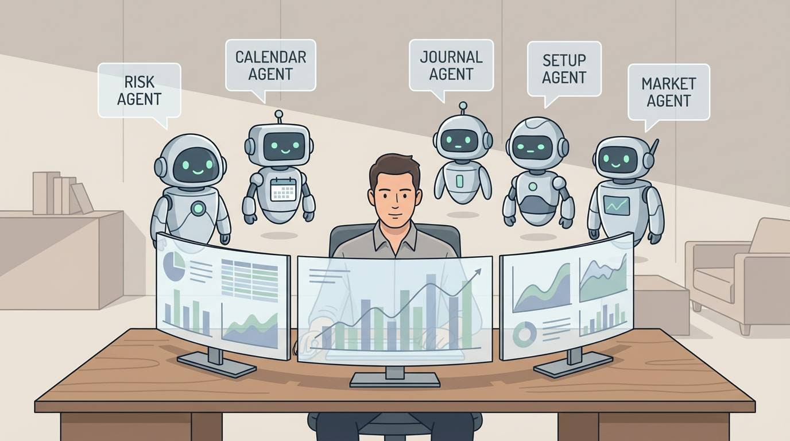

So you might have seen the latest thing in AI circles… and that's AI agents.
Basically, an AI agent is an AI that can run a sequence of tasks on its own, more like a junior assistant than a chatbot.
So, instead of prompting it every time, like you do with ChatGPT, you give it a role, some rules, and it just kinda gets on with it…
You can even talk to these agents via WhatsApp, Telegram, iMessage, or Slack, just like you would a human, which is cool…
Anyway, let's look at some real-world non-trading examples to get a feel for what it could do, and then we'll dive into ideas for traders. Ok?
- Sales agent
Agents that gather intel, send outreach emails, and handle basic replies in place of a sales rep.
- Competitor research
“What are competitors doing this week?”
The agent monitors, summarises, and then reports back.
- Gym or health buddy
Automatically logs steps, workouts, and sleep from your phone apps. Then nudges behaviour. “Oi, go to bed.”
- Email manager
Triages inboxes, drafts replies, categorises emails, and removes spam.
Some people are even buying dedicated Mac minis just to run agents 24/7.
Others are giving them access to files, emails, and even bank accounts. (What could possibly go wrong… 😬)
But what about in trading? Any smart use cases for us traders?
AI AGENTS

Well, I recommend NOT letting it trade for you! (yet…)
However, here are some cool ideas that might work…
- Overnight market intelligence agent
- Summarises what moved overnight in Asia and early Europe.
- Highlights what mattered versus noise.
- Aggregates any news, data, or central bank commentary.
Basically, what do I need to know before the open?
- Economic risk and calendar agent
- Tracks high-impact data, central bank speakers, and key events.
- Reminds you before the release.
- Flags markets most likely to react.
- Attention protection agent
- Monitors screen time and distractions.
- Nudges you when you drift off…
- Helps stop overtrading, impulse, and boredom trades.
Basically, risk management, but for your focus.
- End-of-day trading coach agent
This one's my favourite…(I might build this!)
It pings you after the session via WhatsApp.
Asks a few smart questions.
- Did you follow your plan?
- Any rule breaks?
- Best and worst trade?
- How was your mindset?
You reply by voice or text.
And it logs everything into a journal automatically.
Then it sends back a short coaching summary. Perhaps even a guide for tomorrow…
(That would be pretty neat… ChatGPT voice is good, but this would add another layer.)
Ok, so what are some tools that people are using to build this stuff?
Well, you don't need to be a hardcore developer.
At the moment, most of this is stitched together with tools like
All relatively cheap and not too nerdy…
Anyway… I know some of you are into this stuff and could probably build something cool, so I thought it's worth a mention 🙂
I feel like we're on the cusp of another AI breakthrough here people…
PS: If you've got a bright idea for an AI agent (trading-related), let me know… I'm all ears!